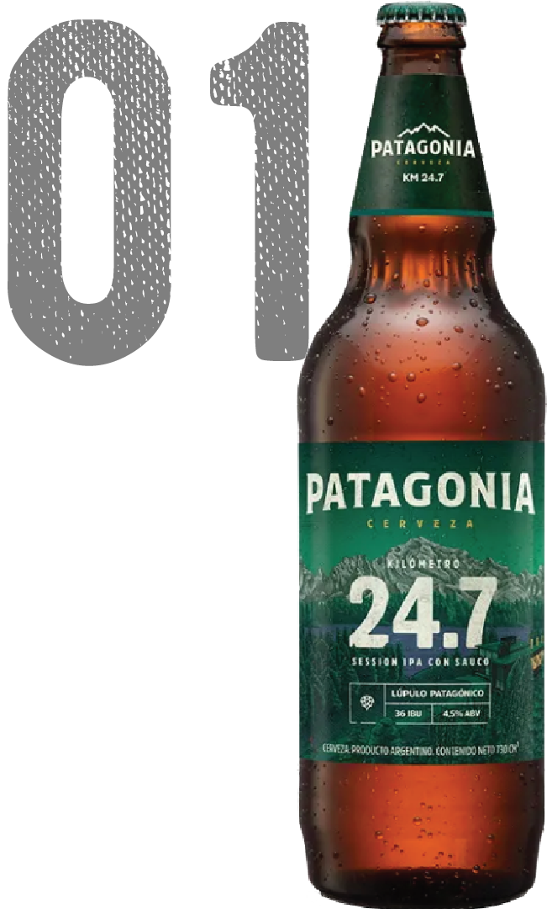
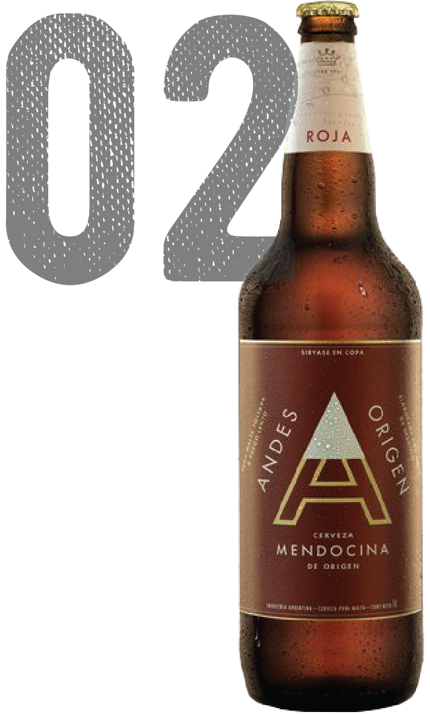
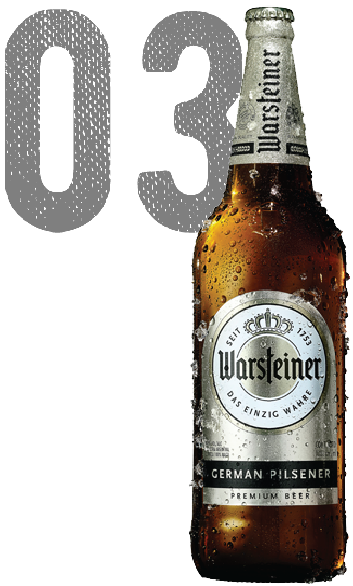

Son muchas las marcas de cerveza que invaden el mercado, pero entre ellas siempre puntean las mejores. Para saber cuáles son las mejores cervezas de Argentina, tienes que preguntarte ¿Cuáles son las favoritas por los consumidores? y ¿Cuales son las más vendidas?
  